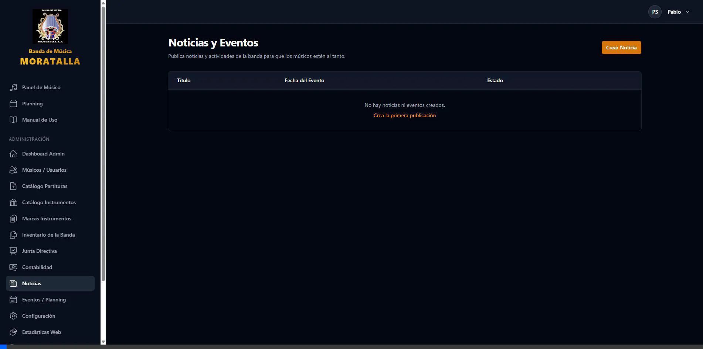
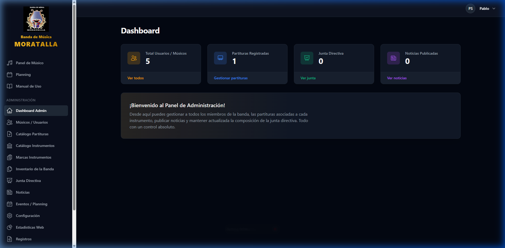
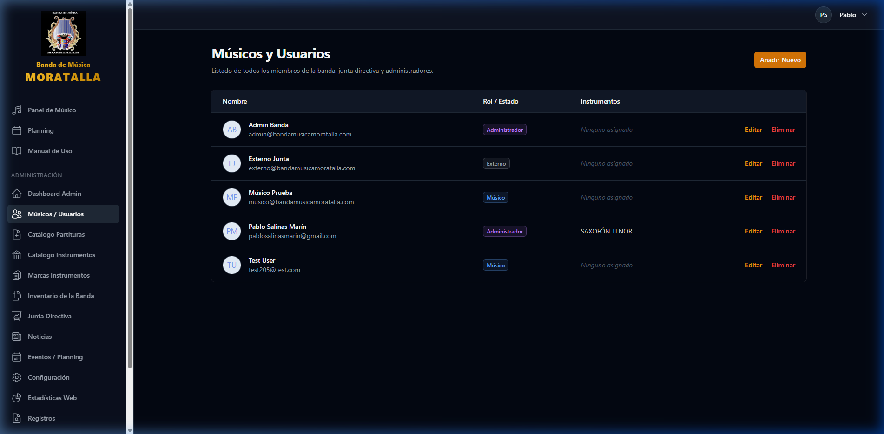
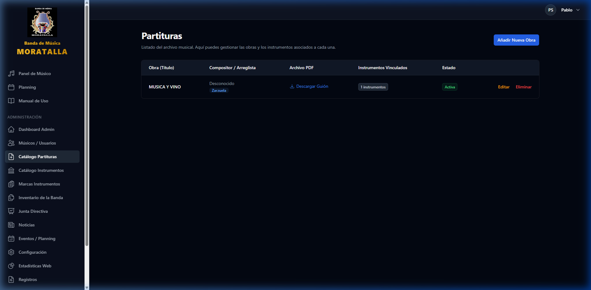
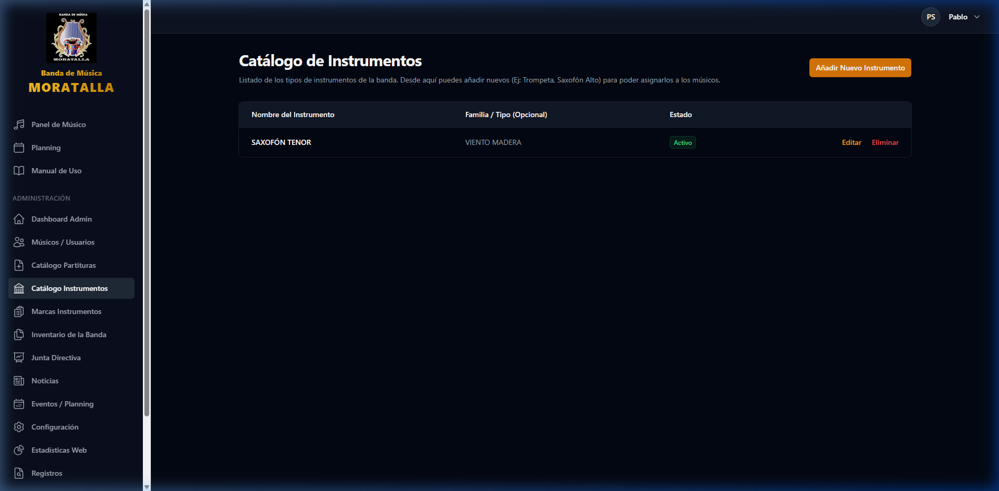
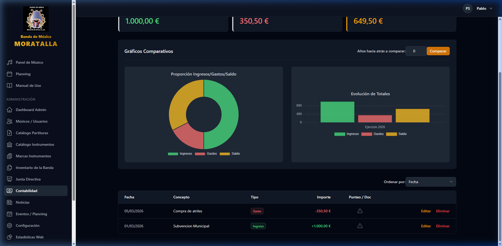
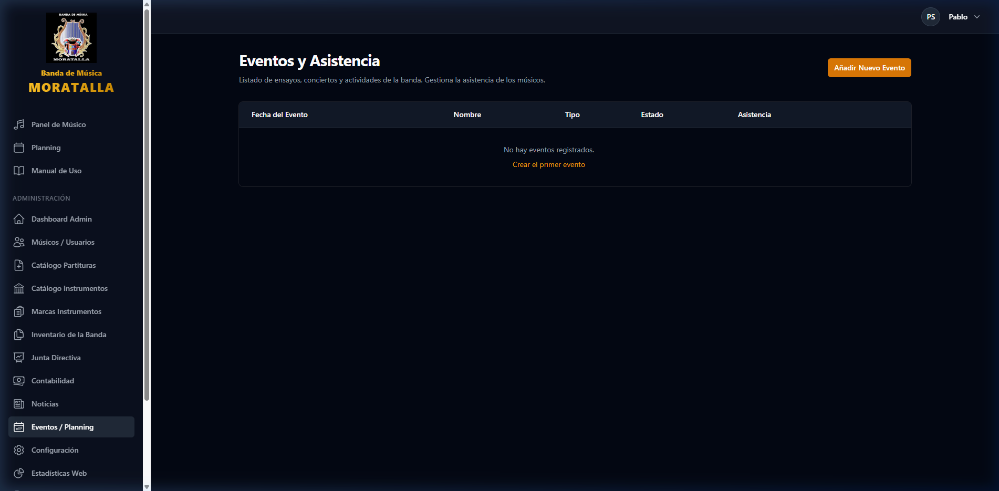
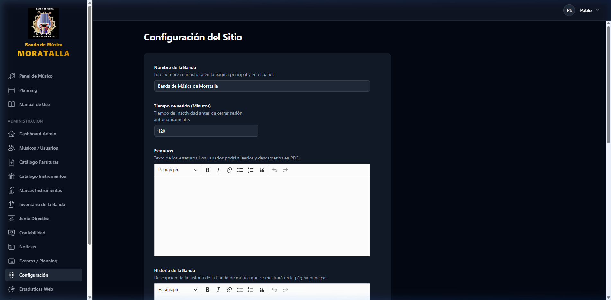
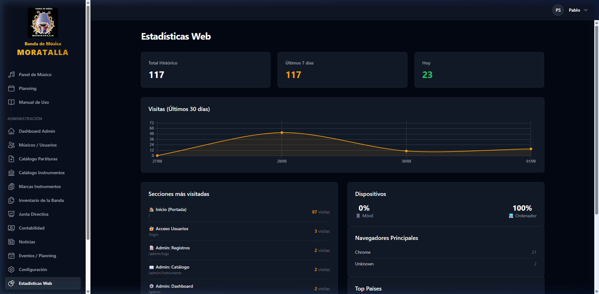
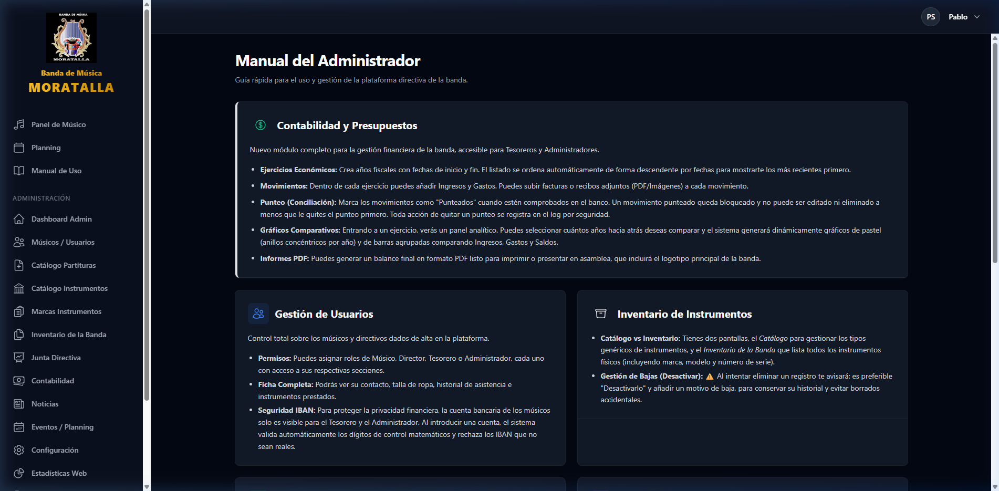

Panel de Administración - Banda de Música Moratalla
Vídeos interactivos y guía explicativa sección por sección del funcionamiento de la zona privada de administración.
Parte 1: Recorrido Principal
Dashboard, Usuarios, Partituras, Instrumentos, Inventario, Junta y Contabilidad

Parte 2: Módulos de Gestión
Noticias, Eventos/Planning, Configuración Web, Estadísticas, Logs y Manual

Detalle Sección por Sección
1. Dashboard Principal (/admin)
Centro de control con métricas en tiempo real de usuarios, partituras registradas, miembros de junta y noticias publicadas.

2. Músicos y Usuarios (/admin/users)
Gestión completa de componentes de la banda, asignación de roles (Administrador, Tesorero, Director, Músico), NIF, teléfono y estado activo.

3. Catálogo de Partituras (/admin/sheet-music)
Archivo digital con búsqueda por compositor/género, subida de guiones completos y subida instantánea de particellas por instrumento.

4. Catálogo de Instrumentos (/admin/instruments)
Registro patrimonial del instrumental de la banda con marca, modelo, número de serie y asignación en préstamo a cada músico.

5. Contabilidad y Ejercicios Fiscales (/admin/fiscal-years)
Gestión económica para tesorería, registro de ingresos/gastos, balance en tiempo real y exportación de liquidación de cuentas.

6. Eventos y Control de Asistencia (/admin/events)
Calendario de ensayos, conciertos y procesiones, con pase de lista y control de asistencia de músicos.

7. Configuración Web y Patrocinadores (/admin/settings)
Gestión de portada, carrusel de diapositivas, textos históricos y logotipos de colaboradores.

8. Estadísticas Web (/admin/analytics)
Métricas de visitas, histórico de accesos y páginas más visitadas.

9. Manual de Administrador (/admin/manual)
Documentación interna integrada para formación y consulta rápida de la directiva.
